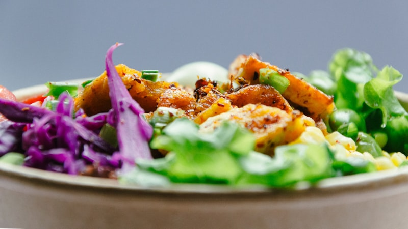

What's For Dinner
Your daily meal inspiration
Saved recipes
Recent
Setting
Profile
4.7
(367 reviewws)
Prep Time
15 min
Cook Time
20 min
Servings
2 people

Easy
Asian
Teriyaki Chicken Bowl
Sweet and savory chicken over rice with vegetables
Ingredients
Instructions
Nutrition
Chef's Tips
1
400g chicken thighs, sliced
2
1/2 cup teriyaki sauce
3
2 cups cooked rice
4
1 broccoli head, florets
1
Heat sesame oil in a pan. Cook chicken until browned on all sides.
2
Add teriyaki sauce to chicken, simmer for 5 minutes until sauce thickens.
3
Meanwhile, steam broccoli and carrots until tender-crisp.
4
Divide rice between bowls.
5
Top with teriyaki chicken and steamed vegetables.
Calories
540 kcal
Protein
42g
Carbohydrates
58g
Fat
14g
Fiber
4g
Sodium
1240mg
Use chicken thighs for juicier meat
Make homemade teriyaki sauce for better flavor control
Add edamame for extra protein
Meal prep by cooking rice and chicken ahead
Try Another Recipe